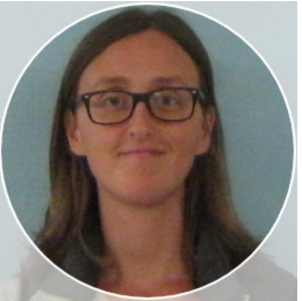

CUBE: Covid-19 in the Urban Built Environment
The CUBE team are: Evgueni Douakine, Michael Fralick, Aaron Hinz, Benazir Hodzic-Santor, Rees Kassen, Derek McFadden, Allison McGeer, Jason Moggridge, Caroline Nott, Ashley Raudanskis, Nisha Thampi, Tamara Van Bakel, Alex Wong, and Veronica Zanichelli
About CUBE

The CUBE (Covid-19 in the Built Urban Environment) project seeks to develop and apply environmental sampling as a spatially-resolved method for monitoring Covid-19 in congregate settings including long-term care homes (LTC), universities, and public schools. Currently, we are focused on facilities located in Toronto, Ottawa, and Sault Ste. Marie.
We swab floors and test for Covid-19 using an RT-qPCR assay developed by DNA Genotek and a novel CRISPR-based device.
Click here to read our preprint from an earlier proof-of-principle study.
FAQ
Can we tell if the virus is viable or not?
Our assay is not able to discern whether Covid-19 recovered in floor samples is viable or not.
What can environmental sampling tell us about the Covid-19 burden in congregate settings?
Detection of Covid-19 in floor samples is correlated with the presence of infected persons.
Can I catch Covid-19 from the floor?
It is highly unlikely to be infected by Covid-19 from floors, but floors may have some viable virus present.
CUBE Sites
CUBE & Your Facility
To arrange for CUBE testing in your facility, please contact us by email: email contact
Contribute to CUBE
To contribute to the CUBE project … ?
Contributions would help us pay for swabs and reagents, allowing us to increase the number of locations included in our study… ?
CUBE Team
Evgueni Doukhanine
Molecular biologist at DNA Genotek specializing in microbiome research and development of chemical reagents and collection devices to facilitate stabilization of primary samples.
Dr. Laura Hug
Assistant Professor and Canada Research Chair in Environmental Microbiology in the Department of Biology at the University of Waterloo. Dr. Hug’s research uses a combination of multi-omics and classical microbiological techniques to examine microbial diversity and function in contaminated sites.
Benazir Hodzic-Santor
Bena is a medical student at the University of Toronto and a research assistant in Dr. Fralick’s lab. She is currently assisting with on-site swabbing in the GTA.
Dr. Rees Kassen
Full Professor and Cystic Fibrosis Canada Researcher, University of Ottawa. Dr. Kassen microbes to study the evolution of biodiversity. Rees is also active at the interface between science, society, and policy, serving currently as Chair of the Science and Innovation Advisory Council at the Institute on Governance and a member of the World Economic Forum’s Global Future Council on Scientific Collaboration.
Jason Moggridge
Research assistant for Dr. Michael Fralick.Data analyst and R programmer for CUBE.

Dr. Nisha Thampi
Medical director of the Infection Prevention and Control Program at CHEO, a pediatric health and research centre in Ottawa, and Associate Professor of Pediatrics at the University of Ottawa.